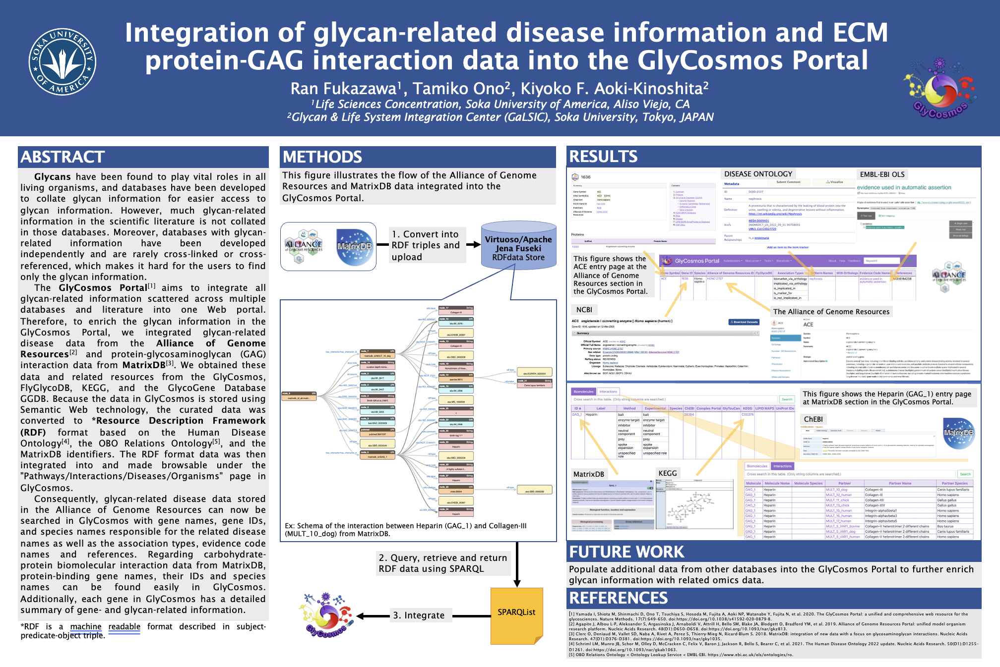

Abstract
Source: ASBMB poster abstract and slides. See references below.
My contributions (high level)
- Curated and mapped glycan-related disease records from the Alliance of Genome Resources into the GlyCosmos RDF data model.
- Converted MatrixDB protein–GAG interaction records into RDF triples using the Human Disease Ontology and MatrixDB identifiers.
- Integrated the converted data into GlyCosmos and added browse/search UI hooks under Pathways / Interactions / Diseases / Organisms.
- Authored SPARQL queries and helped verify results by cross-referencing KEGG, FlyGlycoDB and GGDB.
Technical notes
RDF store: Virtuoso / Apache Jena Fuseki
Query language: SPARQL
Ontologies: Disease Ontology, OBO RO
Sources: AGR, MatrixDB, KEGG, GGDB
Poster slide (preview)

References
- Yamada I, et al. The GlyCosmos Portal: a unified and comprehensive web resource for the glycosciences. Nature Methods (2020).
- Alliance of Genome Resources & MatrixDB sources (integrated for this work). See uploaded materials.